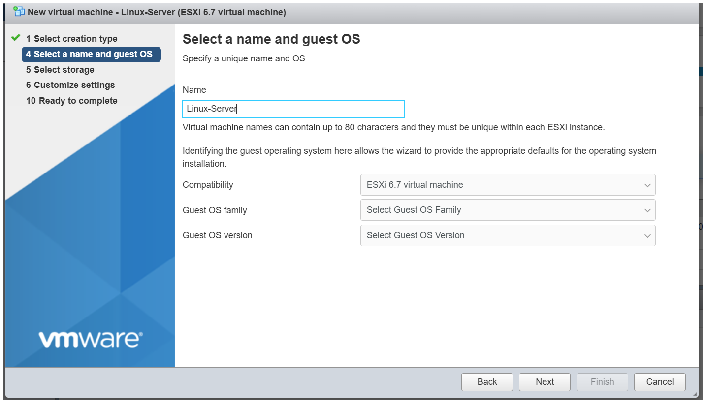
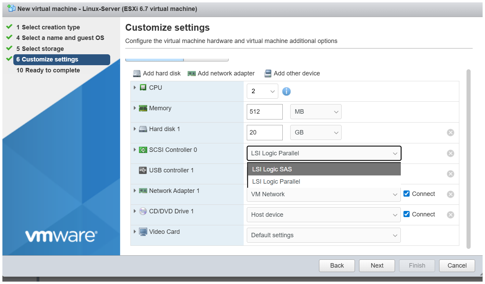
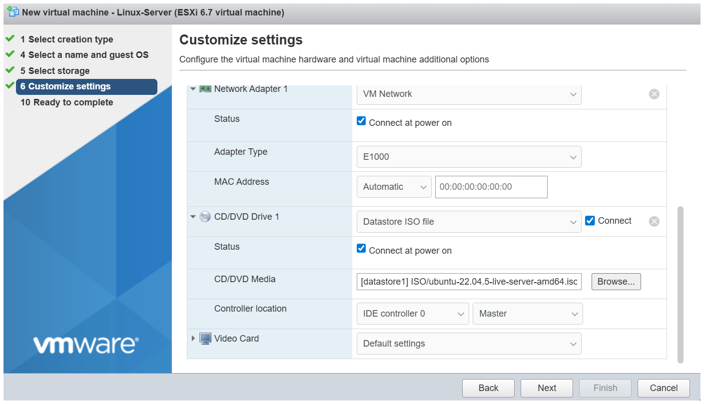
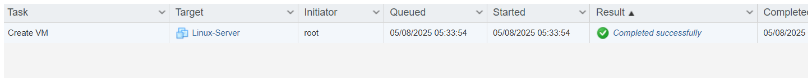
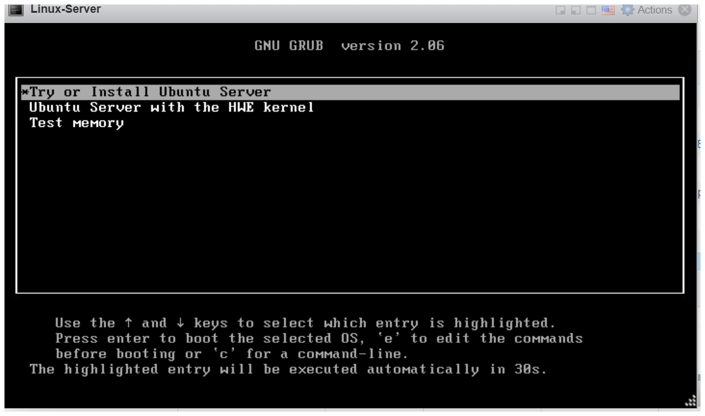
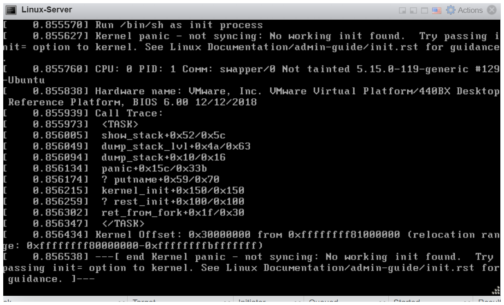
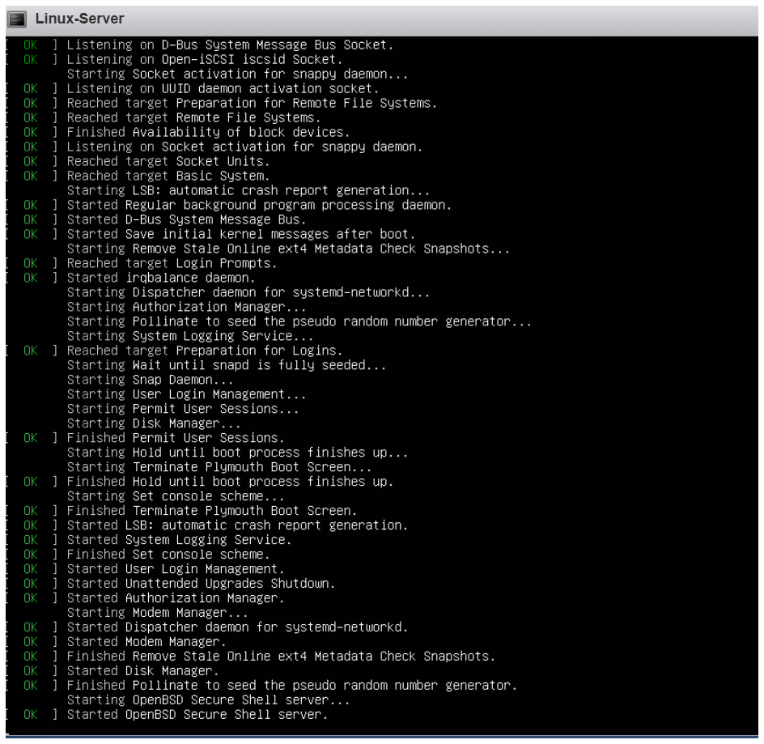
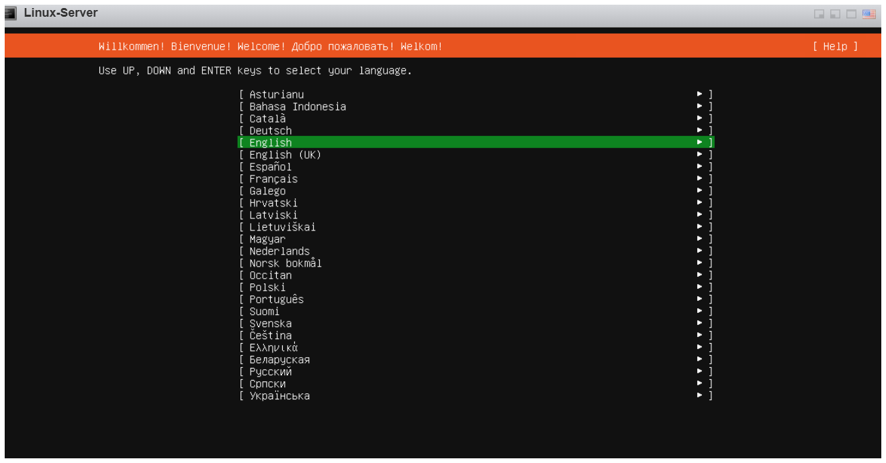

About
I work as a network and Technical Support Engineer at Variable Solutions Pvt Ltd in Kathmandu, This is a path to make a virtual machine in Esxi. This site is where I document things I'm learning and building mostly around virtualization, Linux servers, and firewall config.
Also building a network troubleshooting chatbot using the Claude API.
ESXi — Setting Up a Virtual Machine
These are the steps I followed to set up an Ubuntu server inside VMware ESXi. I'm using thin provisioning for the disk to save space on the datastore.
Step 1 — Create a new VM
Go to the ESXi web interface, click "Create / Register VM" and follow the wizard. Choose "Create a new virtual machine" and give it a name.

Step 2 — Configure storage (thin provisioning)
On the disk settings page, change the provisioning to Thin. This means the disk only uses actual space instead of reserving the full amount upfront.


Step 3 — Finish and power on
Review the summary and click Finish. Then power on the VM and attach the Ubuntu ISO to boot from it.

Ubuntu Server — Initial Configuration
After the VM boots from the ISO, go through the Ubuntu Server installer. The main things to set correctly are the network interface and the disk partition.
Network setup during install

Disk partitioning

More config steps

These are the step in the ubuntu server terminal after the vm setup in the Vmware ESXI

Contact
Feel free to reach out if you want to talk networking, security, or just have questions.